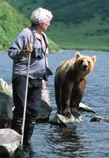

A brutal ending
The research project run by my friends Charlie and Maureen has come to a rather brutal end. The whole collection of bears that they were studying most closely has been slaughtered. Charlie and Maureen had been supporting anti-poaching efforts and they had been making good progress. But the poachers fought back. There are more details here. If you have time, take a look at their past several years work at cloudline.org.| July 28, 2003 |